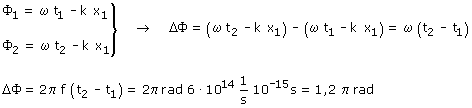
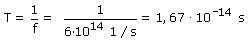

b)
La ecuación de la onda será de la forma:

Calculamos la fase temporal, en el punto x1, en los instantes t1 y t2 (t2 = t1 + 10-15)

Otra forma de hacerlo:

El período de la onda es 1.67·10-14
s lo que significa que en este tiempo la fase cambia en 2·π
rad
Luego en 10-15 s la fase cambiará en x rad. Regla de
tres (Con perdón) que da: 1.2·π rad